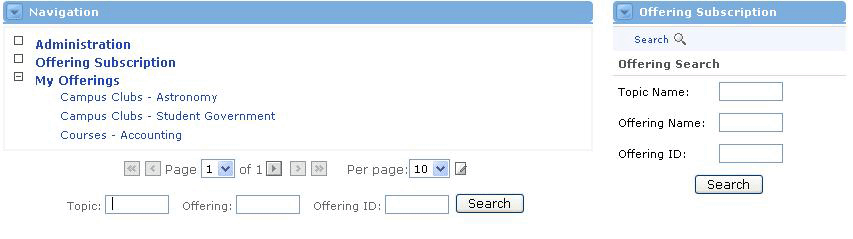

Subscribing to an Offering
|
The default view of the Offering Subscription channel shows a search feature, which allows users to find offerings by different criteria. Once the search is complete, users will have the ability to enroll and unenroll in offerings. |
Change User Status
- Click on the Offering Subscription link within the Navigation channel.
- Enter the offering search criteria.
- Each offering matching your criteria will be listed in alphabetical order by Name. Information on Description, Enrollment Model Type, and User Status will also be displayed.
- Click on the Enrolled, Pending Approval or Unenrolled link to change your status within the associated offering.
|

Enrollment Types
Different enrollment types require different steps for a user to successfully enroll in the offering. For example, any user can enroll into an offering with an Open enrollment type. However, if the enrollment type is Request / Approve, the user follows the same steps to enroll, but they will not be admitted into the offering until the offering sponsor approves their enrollment request.
- Open Enrollment - Any user can enroll themselves into the offering.
- Request / Approve Enrollment - A user must first send a request to the offering sponsor by selecting the unenrolled link in the offering subscription channel . The sponsor then decides whether to approve or deny that user's request into the offering via the Roster Channel.